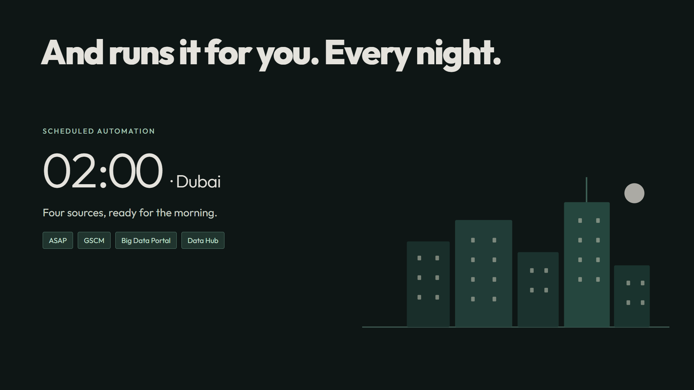

In Sync
Every system. One rhythm.
84 seconds · 16:9 · English · No voiceover
Watch the full 84-second animatic with sound →
These frames reflect the quiet presentation cut: one Metronome symbol, separate data sources, a visible automation pipeline, and an AI-agent investigation. Flat illustrations replace the realistic photo sequence; the score is softer and sparser. Click a frame to inspect it full size. The full motion draft and score are available above.
Eight scenes. One rhythm.
Review the ending: the supplied disclosure starts at 82.5s, then the film cuts to black at 83.5s. I recommend bringing it forward to 82.0s for a 1.5-second reading hold.
Future capability: scene 6 visibly carries “Concept preview.” Its reports and figures are fictional.
Presentation sound: soft felt-key notes and small interface cues replace the previous drone, impacts, riser and constant metronome tick.
Illustrated overnight run
